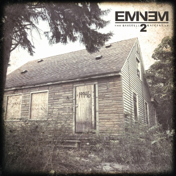

The Marshall Mathers LP 2
Released November 5, 2013

Serving as a sequel to The Marshall Mathers LP, this album features guest appearances from Skylar Grey, Rihanna, Nate Ruess, and rapper Kendrick Lamar, among others. The idea of a sequel to The Marshall Mathers LP came about after Eminem recorded a handful of songs in the early stages of the creation of the album that reminded him of his earlier music, though Eminem wanted to experiment with "retro, vintage" sounds from turntablism for the sequel. The album draws influences from arena rock and old-school hip hop, mainly inspired by the Beastie Boys' Licensed to Ill era and LL Cool J's Radio era, while the production is more minimalist than Eminem's previous records. The album was regarded as one of the most anticipated albums of 2013 debuting at number one on the US Billboard 200, selling more than 792,000 copies in its first week.
Tracklist
| Bad Guy | 7:14 |
| Parking Lot (Skit) | 0:55 |
| Rhyme or Reason | 5:01 |
| So Much Better | 4:21 |
| Survival (Ft. Liz Rodrigues) | 4:32 |
| Legacy | 4:56 |
| Asshole (Ft. Skylar Grey) | 4:48 |
| Berzerk | 3:58 |
| Rap God | 6:03 |
| Brainless | 4:46 |
| Stronger Than I Was | 5:36 |
| The Monster (Ft. Rihanna) | 4:10 |
| So Far... | 5:17 |
| Love Game (Ft. Kendrick Lamar) | 4:56 |
| Headlights (Ft. Nate Ruess) | 5:43 |
| Evil Twin | 5:56 |
| Baby | 4:23 |
| Desperation (Ft. Jamie N Commons) | 3:56 |
| Groundhog Day | 4:53 |
| Beautiful Pain (Ft. Sia) | 4:25 |
| Wicked Ways | 6:31 |